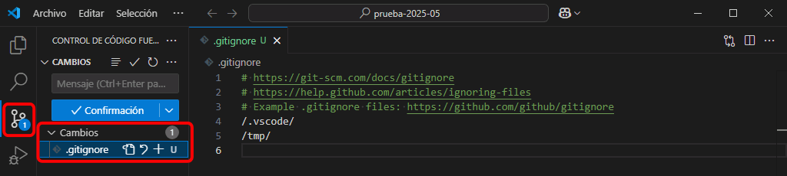
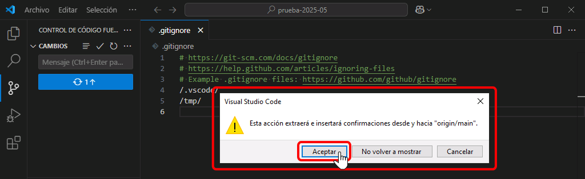

Realizar commits en el repositorio remoto
En git, un commit es un conjunto de cambios que se realizan en los archivos del repositorio (modificar, añadir, eliminar, mover, renombrar, etc).
En Visual Studio Code podemos realizar commits, que se guardan en el repositorio local. Para sincronizar nuestros cambios en el repositorio, debemos identificarnos como usuario del repositorio.
Como ejemplo de commit, añadiremos el archivo .gitignore al repositorio.
 En Windows esa identificación se guarda como credencial de Windows, por lo que si estamos utilizando un ordenador al que tienen acceso otras personas, es muy importante que eliminemos la credencial antes de abandonar el ordenador o nos arriesgamos a que otro usuario nos suplante y acceda a los repositorios remotos.
En Windows esa identificación se guarda como credencial de Windows, por lo que si estamos utilizando un ordenador al que tienen acceso otras personas, es muy importante que eliminemos la credencial antes de abandonar el ordenador o nos arriesgamos a que otro usuario nos suplante y acceda a los repositorios remotos.
El proceso en Visual Studio Code sería el siguiente:
- Abra una ventana de Terminal e indique a git su nombre de usuario en GitHub (entre comillas si contuviera espacios) y la dirección de correo del usuario vinculada a su cuenta en GitHub:
git config --global user.email SU-CORREO-ELECTRONICO git config --global user.name SU-NOMBRE-DE-USUARIO-DE-GITUHUB
En Windows, esta información se guarda en el archivo C:\Users\UsuarioDeWindows\.gitconfig.
- Visual Studio Code avisa de varias maneras de los cambios en los archivos con respecto al repositorio remoto.
- El icono Control de código fuente nos indica el número de archivos con cambios (en este caso, 1)
- En la barra del Explorador, VSCode indica qué archivos son nuevos (con la letra U), se han modificado (con la letra M) o eliminado (con la letra D) y los muestra con diferentes colores.
- Si tenemos alguno de esos archivos abierto en el editor, la pestaña muestra también la letra U/M/D junto al nombre del archivo, también con diferentes colores.

- Abra la barra lateral de Control de código fuente haciendo clic en el icono correspondiente. Se mostrará la lista de archivos con cambios:

- Seleccione cada uno de los archivos cuyos cambios formarán parte del commit (puede elegir todos los archivos modificados o sólo una parte) haciendo clic en el icono +:
- Los archivos seleccionados se muestran en un apartado "Cambios almacenados provisionalmente" ("staged").

- Escriba el mensaje descriptivo del commit en la caja superior y pulse Ctrl+Intro (o haga clic en el botón Confirmación):
- Los archivos incluidos en el commit dejan de mostrarse en la barra lateral y en el contador del icono Control de código fuente:
- Tanto en la barra lateral de Control de código fuente como en la barra inferior, Visual Studio Code nos avisa que el repositorio local ya no está sincronizado con el repositorio remoto y nos indica el número de commits de diferencia:
- Haga clic en cualquiera de los dos sitios para sincronizar el repositorio remoto con el local.
- Visual Studio Code mostrará un aviso indicando que al sincronizar se producirán cambios en el repositorio remoto. Para no volver a ver este aviso, haga clic en "De acuerdo, no volver a ver este mensaje":

- Para poder modificar el repositorio remoto, debemos identificarnos. En Windows, a través del navegador, GitHub nos solicita nuestro nombre y contraseña de usuario y los guarda en las credenciales de Windows para no tener que estar continuamente identificándonos.
- Se abrirá una ventana que nos da opción de realizar este proceso. Haga clic en "Sign in with your browser".
- El gestor de credenciales de Git nos muestra el nombre y correo electrónico del usuario. Haga clic en "Authorize GitCredentialManager":
- Confirme la contraseña del usuario de GitHub (en la captura de ejemplo se indica que ya tenemos sesión abierta en GitHub, en este caso en otra pestaña del navegador, pero eso no afecta al procedimiento que estamos realizando):
- Si todo funciona correctamente, se mostrará el mensaje correspondiente (la pestaña del navegador se puede cerrar).
- En Visual Studio el icono de Control de código fuente ya no muestra el indicador de archivos con cambios y la barra lateral no contiene ningún fichero con cambios respecto al repositorio de GitHub.
- Puede comprobar visitando el repositorio remoto en el navegador que se han realizado los cambios.
- En el repositorio remoto se ha creado el fichero .gitignore.
- El contador de commits aumenta.
- Haciendo clic en el contador de commits se pueden ver todos los commits realizados en el repositorio (su fecha de realización, ficheros afectados, etc.)